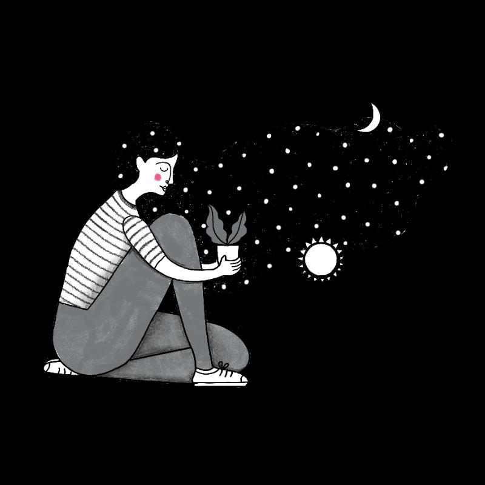

Home
Mental health is a cornerstone of overall well-being, intricately tied to our emotional, psychological, and social functioning. It shapes how we think, feel, and behave, directly influencing our capacity to handle stress, form meaningful relationships, and make informed decisions. Globally, one in eight people live with a mental disorder, with depression and anxiety being the most common (WHO, 2022). These conditions not only impact emotional wellness but also correlate with increased risk of physical illnesses, such as heart disease and weakened immune response. Poor mental health has also been linked to lower academic and workplace performance, greater risk of substance abuse, and reduced life satisfaction.
Book a Session
In 2025, globally, a significant portion of the population experiences mental health challenges. Globally, over one in eight people live with a mental disorder. Specifically, anxiety and depression are among the most common mental health conditions. Workplace mental health is also a growing concern, with a significant number of employees reporting mental health problems and a desire for more workplace support.
Women tend to report higher rates of depression and anxiety, while men have higher rates of substance use disorders and suicide. However, Mental health issues cost the global economy around $1 trillion every year.
Resources
Learn More
In the evolving landscape of mental health support, digital platforms have emerged as powerful allies for individuals and families navigating emotional and psychological challenges. These online resources exemplify how community-based networks can deliver crucial support in ways that traditional systems often cannot. With large and growing communities, such platforms stand as a testament to the increasing demand for peer-led environments that offer education, empathy, and empowerment.